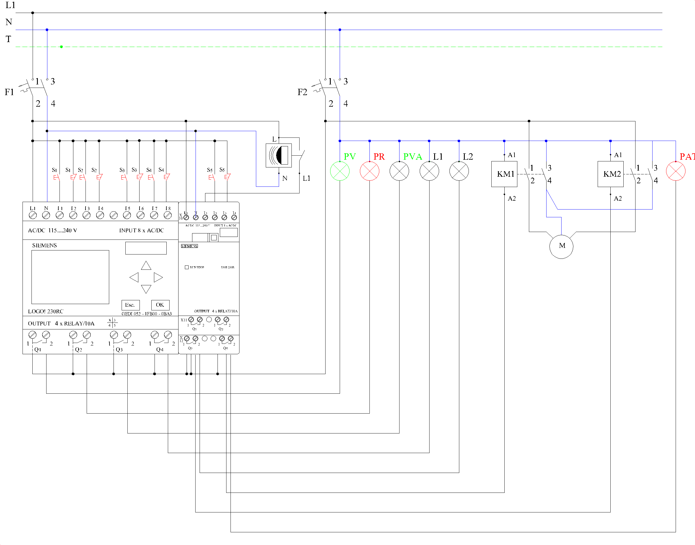

6.- Instalación domótica de vivienda
1. Asignación de señales en el relé programable.
- I1: Pulsador marcha (S1) — contacto NO.
- I2: Pulsador paro (S1) — contacto NC.
- I3: Pulsador marcha (S2) — contacto NO.
- I4: Pulsador paro (S2) — contacto NC.
- I5: Pulsador marcha (S3) — contacto NO.
- I6: Pulsador paro (S3) — contacto NC.
- I7: Pulsador marcha (S4) — contacto NO. Subir persiana.
- I8: Pulsador paro (S4) — contacto NC. Final de carrera de subida.
- I9: Detector de movimiento (DM) — entrada I1 del módulo DM8 230R.
- I10: Pulsador marcha (S5) — contacto NO. Bajar persiana (entrada I2 del módulo).
- I11: Pulsador paro (S5) — contacto NC. Final de carrera de bajada (entrada I3 del módulo).
- Q1: Piloto verde (PV).
- Q2: Piloto rojo (PR).
- Q3: Piloto verde alarma (PVA).
- Q4: Lámpara de alarma (L1).
- Q5: Lámpara del detector (L2) — salida Q1 del módulo.
- Q6: Contactor KM1 — subir persiana (salida Q2 del módulo).
- Q7: Contactor KM2 — bajar persiana (salida Q3 del módulo).
- Q8: Piloto de alarma técnica (PAT) — salida Q4 del módulo (salida 8).
- NI1: Señal de alarmas técnicas — enviada por red Ethernet desde el segundo LOGO!.
Entradas digitales
Salidas digitales
Entradas de red
2. Programa en FUP (LOGO!Soft Comfort)
| Bloque / Segmento | Lógica | Función |
|---|---|---|
| B001 RS | S = I1 | R = NOT I2 | Circuito activado → Q1; NOT B001 → Q2 |
| B002 – B005 | Igual que en la práctica 5 | Funciones de S2 sobre L2 (pulsación corta y larga) |
| B006 AND / OR | Q5 = B001 AND (I9 OR B004 OR B005) | Lámpara L2: detector o S2 |
| B007 / B008 | Igual que en la práctica 5 | Activación de la alarma con S3 y disparo de la alarma (B008) |
| B009 RS | S = I7 AND B001 AND NOT Q7 | R = NOT I8 OR NOT B001 | Subida de la persiana → Q6 |
| B010 RS | S = I10 AND B001 AND NOT Q6 | R = NOT I11 OR NOT B001 | Bajada de la persiana → Q7 |
| B011 Temporizador anual | ON = 01-07, OFF = 15-07, «cada año» activado | Periodo del 1 al 15 de julio |
| B012 Temporizador semanal | Leva 1: lunes a domingo, ON = 10:00, OFF = 11:00 | Franja de 10:00 a 11:00 |
| B013 AND | B011 AND B012 AND B001 | Simulación de presencia |
| B015 OR | Q4 = B008 OR B013 | Lámpara L1: disparo de la alarma o simulación de presencia |
| B014 Generador de impulsos asíncrono | En = NI1, TH = 0,5 s, TL = 0,5 s | Alarma técnica: PAT intermitente → Q8 |
Antes de probar la simulación hay que poner en hora el LOGO! (Configurar → Ajustar reloj). En LOGO!Soft Comfort se puede comprobar adelantando la fecha y la hora del simulador. La alarma técnica no depende de B001, así que se señaliza aunque el circuito esté desactivado.
Comunicación entre los dos LOGO!: los dos equipos deben tener puerto Ethernet (LOGO! 0BA7 o posterior) y estar en la misma red, con direcciones IP del mismo rango. En LOGO!Soft Comfort se añaden los dos módulos en la vista de red y se crea una conexión entre ellos: la salida (o marca) de alarma técnica del segundo LOGO! se envía como salida de red y en este LOGO! se recibe en la entrada de red NI1.
3. Esquema
Esquema multifilar de la práctica 6.
